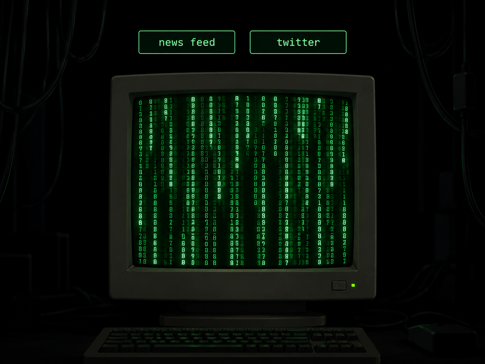

The 1999 film The Matrix predicted the emergence of doomscrolling. Now you too can doomscroll in retrofuturistic style.
BBC NewsConnecting...

The 1999 film The Matrix predicted the emergence of doomscrolling. Now you too can doomscroll in retrofuturistic style.